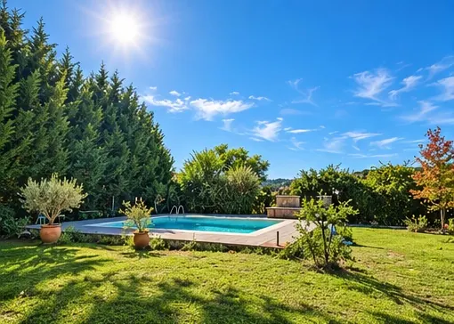
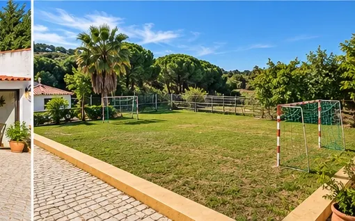
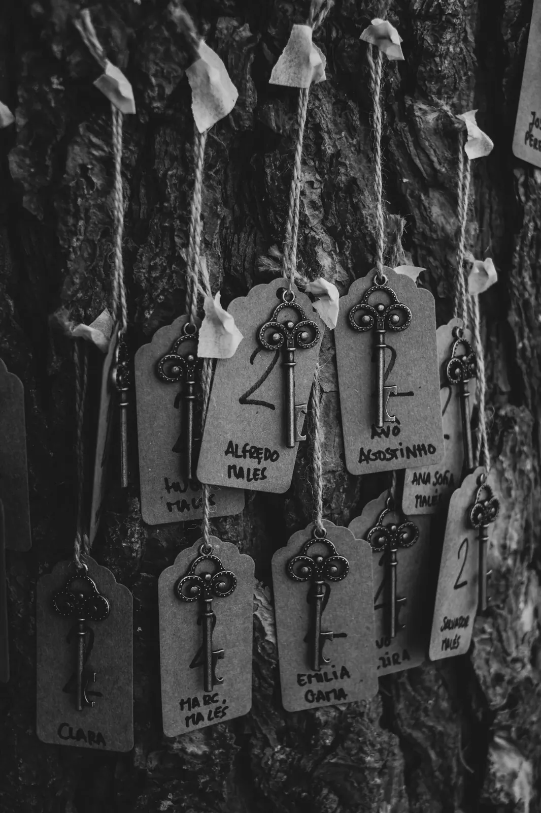
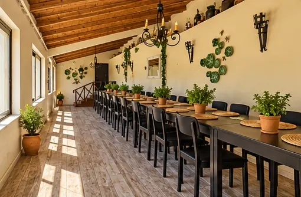
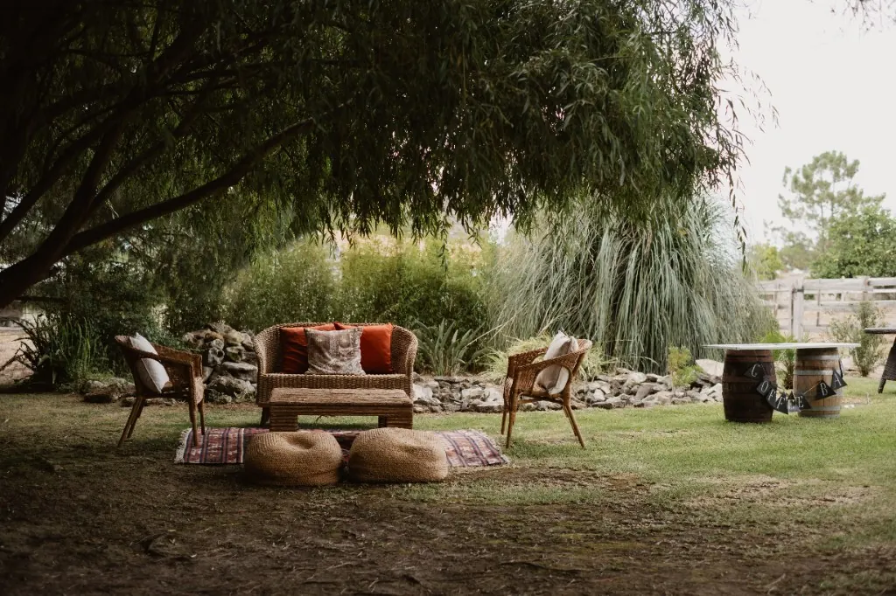

Natureza, espaço e
muita imaginação
Apenas a 40 minutos de Lisboa, descubra o cenário perfeito para celebrar casamentos com alma, aniversários infantis e encontros corporativos memoráveis.

Situada na Azambuja e com rápido acesso a partir de Lisboa, a Sereno Gatherings junta a tranquilidade do campo à autenticidade da arquitetura tradicional portuguesa.
Contamos com extensos jardins, área de piscina, pinhal privativo, zona de animais da quinta e salões com luz natural, garantindo conforto em qualquer estação do ano.
Desde festas intimistas em família até celebrações de grande escala.

Aniversários ao ar livre com insufláveis, póneis e contacto direto com a natureza. Packs a partir de 120 €.

Sob ConsultaCerimónias e celebrações intimistas com exclusividade do espaço e liberdade de catering.

Teambuilding, reuniões com luz natural e almoços de empresa fora da rotina do escritório.

Bodas de prata, piqueniques familiares, noites de fados, gravações, workshops ou convívios privados ao ar livre.
Sim. A Sereno Gatherings (Pedaços de Sonho) situa-se em Casais de Baixo, concelho de Azambuja, a cerca de 40 minutos do centro e do aeroporto de Lisboa, com acesso rápido pelas principais vias rápidas e autoestradas.
Para casamentos e batizados, o valor é sob consulta. Ajustamos a duração, o número de convidados, a exclusividade do espaço e eventuais serviços adicionais para garantir que a celebração decorre exatamente ao vosso ritmo.
Sim. Dispomos de packs próprios, mas damos total flexibilidade para trazerem o vosso catering de eleição, bolo, animação ou decoração exterior.
O aluguer por turnos de 3 horas começa nos 120 € (manhã, dias de semana). Existem turnos de manhã, tarde e fim de tarde, com valores de fim-de-semana distintos, e aluguer de dia completo (6h) em época baixa e alta. Consulte a página de reservas para a tabela atualizada.
A caução reembolsável é de 150 €. A confirmação da data é feita mediante sinal de 50%.
Sim, conforme disponibilidade: experiência de quinta pedagógica com animais, passeios de pónei, e extras como insuflável, pinturas faciais, animador ou caça ao tesouro. Os detalhes e preços estão na página de reservas.
Consulte os turnos de aluguer, selecione os extras pretendidos e receba uma confirmação de disponibilidade rápida.
Ver Tabela e Fazer Pedido